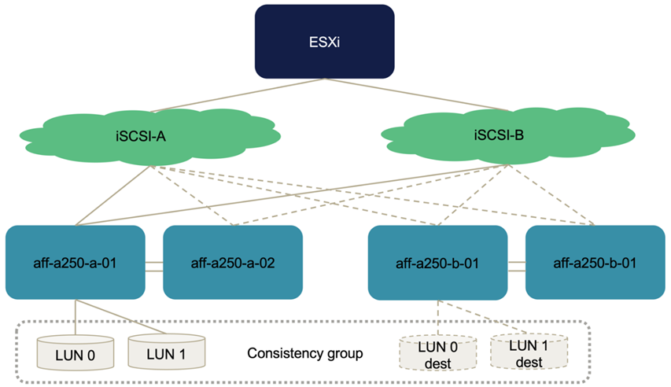
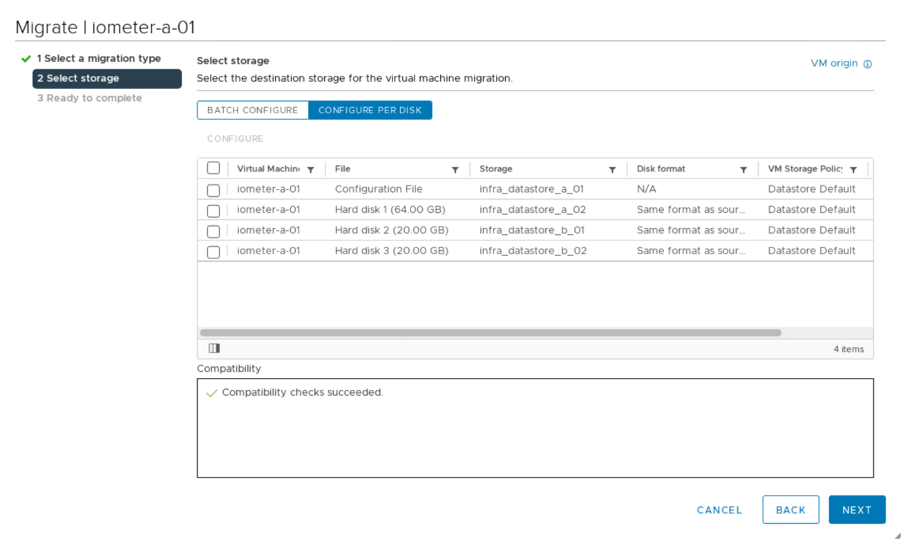
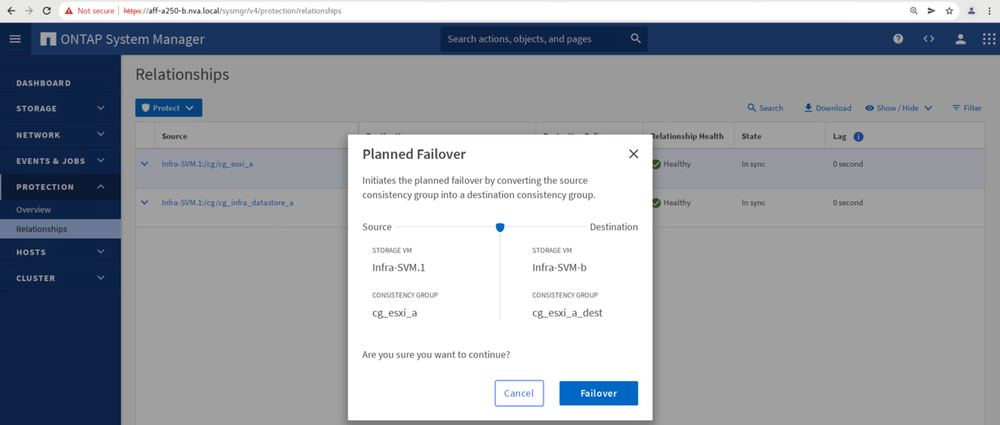
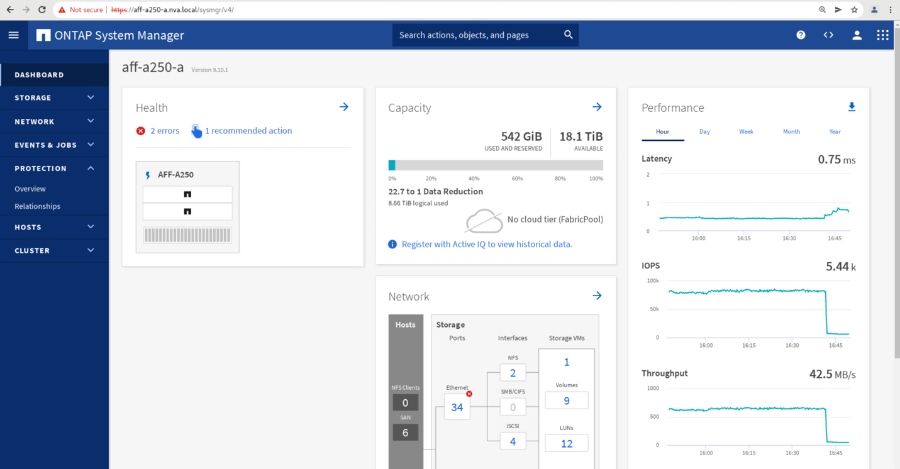
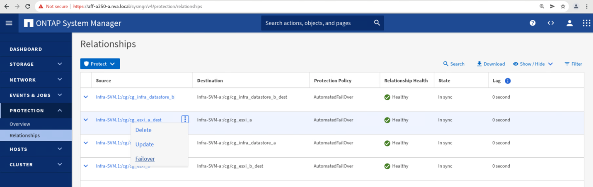

请求文档变更
请求文档变更 在 GitHub 上编辑
在 GitHub 上编辑 提供者指南
提供者指南解决方案 验证—经验证的场景
FlexPod 数据中心 SM-BC 解决方案 可为各种单点故障情形以及站点灾难提供数据服务保护。每个站点上实施的冗余设计可提供高可用性，而具有跨站点同步数据复制功能的 SM-BC 实施可保护数据服务，使其免受站点范围内灾难的影响。已对部署的解决方案 进行了验证，以确定其所需的解决方案 功能以及解决方案 可保护的各种故障情形。
解决方案 功能验证
我们会使用多种测试用例来验证解决方案 功能，并模拟部分和完整的站点故障情形。为了最大限度地减少与现有 FlexPod 数据中心解决方案在 Cisco 验证设计计划下执行的测试的重复，本报告重点介绍了解决方案 中与 SM-BC 相关的方面。我们提供了一些常规 FlexPod 验证，供实践人员进行实施验证。
为了进行解决方案 验证，在两个站点的所有 ESXi 主机上为每个 ESXi 主机创建一个 Windows 10 虚拟机。安装了 IOmeter 工具，并使用该工具为从共享本地 iSCSI 数据存储库映射的两个虚拟数据磁盘生成 I/O 。配置的 IOMeter 工作负载参数包括 8 KB I/O ， 75% 读取和 50% 随机，每个数据磁盘具有 8 个未完成的 I/O 命令。对于执行的大多数测试场景， IOmeter I/O 的继续发生原因 表示此场景不会造成数据服务中断。
由于 SM-BC 对于数据库服务器等业务应用程序至关重要， 测试中还包括 Windows Server 2022 虚拟机上的 Microsoft SQL Server 2019 实例，用于确认在本地站点的存储不可用且远程站点存储恢复数据服务而不使用应用程序时，应用程序仍会继续运行 中断。
ESXi 主机 iSCSI SAN 启动测试
解决方案 中的 ESXi 主机已配置为从 iSCSI SAN 启动。使用 SAN 启动可以简化更换服务器时的服务器管理，因为服务器的服务配置文件可以与新服务器关联，以便在不更改任何其他配置的情况下启动它。
除了从本地 iSCSI 启动 LUN 启动站点上的 ESXi 主机之外，还会执行测试，以便在 ESXi 主机的本地存储控制器处于接管状态或其本地存储集群完全不可用时启动该主机。这些验证场景可确保根据设计正确配置 ESXi 主机，并可在存储维护或灾难恢复期间启动以实现业务连续性。
在配置 SM-BC 一致性组关系之前，存储控制器 HA 对托管的 iSCSI LUN 具有四个路径，根据最佳实践的实施情况，每个 iSCSI 网络结构有两个路径。主机可以通过两个 iSCSI VLAN/ 网络结构访问 LUN 到 LUN 托管控制器，也可以通过控制器的高可用性配对节点访问 LUN 。
配置 SM-BC 一致性组关系并将镜像 LUN 正确映射到启动程序后， LUN 的路径数会增加一倍。在此实施中，它会从具有两个主动 / 优化路径和两个主动 / 非优化路径变为具有两个主动 / 优化路径和六个主动 / 非优化路径。
下图说明了 ESXi 主机访问 LUN 时可以使用的路径，例如 LUN 0 。由于 LUN 连接到站点 A 控制器 01 ，因此只有通过该控制器直接访问 LUN 的两个路径处于活动 / 优化状态，其余六个路径均处于活动 / 非优化状态。

以下 storage-device-path 信息的屏幕截图显示了 ESXi 主机如何查看这两种类型的设备路径。两个主动 / 优化路径显示为具有 主动（ I/O ） 路径状态，而六个主动 / 非优化路径仅显示为 主动 。另请注意，目标列显示了两个 iSCSI 目标以及用于访问这些目标的相应 iSCSI LIF IP 地址。

当其中一个存储控制器因维护或升级而关闭时，到达已关闭控制器的两条路径将不再可用，而是显示路径状态 dead 。
如果由于手动故障转移测试或自动灾难故障转移，一致性组在主存储集群上发生故障转移，则二级存储集群将继续为 SM-BC 一致性组中的 LUN 提供数据服务。由于 LUN 标识会保留下来，并且数据已同步复制，因此受 SM-BC 一致性组保护的所有 ESXi 主机启动 LUN 仍可从远程存储集群访问。
VMware vMotion 和 VM/ 主机关联性测试
虽然通用 FlexPod VMware Datacenter 解决方案 支持多协议，例如 FC ， iSCSI ， NVMe 和 NFS ，但 FlexPod SM-BC 解决方案 功能支持通常用于业务关键型解决方案的 FC 和 iSCSI SAN 协议。此验证仅使用基于 iSCSI 协议的数据存储库和 iSCSI SAN 启动。
要允许虚拟机使用任何一个 SM-BC 站点的存储服务，集群中的所有主机都必须挂载两个站点的 iSCSI 数据存储库，以便在两个站点之间迁移虚拟机，并在发生灾难故障转移时进行迁移。
对于在虚拟基础架构上运行的不需要跨站点实施 SM-BC 一致性组保护的应用程序，也可以使用 NFS 协议和 NFS 数据存储库。在这种情况下，在为 VM 分配存储时必须谨慎，这样，业务关键型应用程序才能正确使用受 SM-BC 一致性组保护的 SAN 数据存储库来提供业务连续性。
以下屏幕截图显示主机已配置为从两个站点挂载 iSCSI 数据存储库。

您可以选择在两个站点的可用 iSCSI 数据存储库之间迁移虚拟机磁盘，如下图所示。出于性能考虑，最好让虚拟机使用其本地存储集群中的存储来减少磁盘 I/O 延迟。由于物理往返距离延迟约为每 100 公里 1 毫秒，因此当两个站点相隔一定距离时尤其如此。

对虚拟机在同一站点以及不同站点的不同主机上的 vMotion 进行了测试，并取得了成功。在站点间手动迁移虚拟机后， VM/ 主机关联性规则会激活虚拟机并将其迁移回正常情况下所属的组。
计划内存储故障转移
应在初始配置后对解决方案 执行计划内存储故障转移操作，以确定解决方案 在存储故障转移后是否正常工作。此测试有助于确定可能导致 I/O 中断的任何连接或配置问题。定期测试和解决任何连接或配置问题有助于在发生实际站点灾难时提供无中断的数据服务。也可以在计划的存储维护活动之前使用计划的存储故障转移，以便可以从不受影响的站点提供数据服务。
要启动站点 A 存储数据服务到站点 B 的手动故障转移，您可以使用站点 B ONTAP 系统管理器执行此操作。
-
导航到保护 > 关系屏幕，确认一致性组关系状态为
in Sync。如果它仍处于Synchronizing状态，请等待状态变为in Sync，然后再执行故障转移。 -
展开源名称旁边的点，然后单击故障转移。

-
确认故障转移以启动操作。

在站点 B System Manager 图形用户界面上对两个一致性组 CG_ESXi_A 和 CG_infra_datastore_A 启动故障转移后不久，为这两个一致性组提供服务的站点 A I/O 便移至站点 B因此，站点 A 的 I/O 会显著减少，如站点 A System Manager 性能窗格中所示。

另一方面，站点 B System Manager 信息板的 " 性能 " 窗格显示 IOPS 显著增加，这是因为提供了从站点 A 转移到大约 130 ， 000 IOPS 的额外 I/O 。 并达到大约 1GB/ 秒的吞吐量，同时 I/O 延迟保持在 1 毫秒以下。

随着 I/O 从站点 A 透明地迁移到站点 B ，现在可以关闭站点 A 存储控制器以进行计划内维护。完成维护工作或测试并恢复站点 A 存储集群并使其正常运行后，请先检查并等待一致性组保护状态重新更改为同步 ` ，然后再执行故障转移，将故障转移 I/O 从站点 B 返回到站点 A请注意，站点因维护或测试而关闭的时间越长，同步数据以及将一致性组返回到处于同步 状态的 `所需的时间就越长。

计划外存储故障转移
发生实际灾难或进行灾难模拟期间，可能会发生计划外存储故障转移。例如，请参见下图，其中站点 A 的存储系统发生断电，触发计划外存储故障转移，站点 A LUN 的数据服务受 SM-BC 关系保护，然后从站点 B 继续提供

要模拟站点 A 的存储灾难，可以通过物理关闭电源开关来关闭站点 A 的两个存储控制器，从而停止为控制器供电。 或者使用存储控制器服务处理器的 system power management 命令关闭控制器。
当站点 A 的存储集群断电时，站点 A 存储集群提供的数据服务会突然停止。然后，用于监控第三个站点的 SM-BC 解决方案 的 ONTAP 调解器会检测站点的存储故障情况，并使 SM-BC 解决方案 能够执行自动计划外故障转移。这样，站点 B 存储控制器就可以继续为与站点 A 建立的 SM-BC 一致性组关系中配置的 LUN 提供数据服务
从应用程序角度来看，操作系统会短暂暂停数据服务，同时检查 LUN 的路径状态，然后恢复正常运行的站点 B 存储控制器的可用路径上的 I/O 。
在验证测试期间，两个站点的 VM 上的 IOMeter 工具会为其本地数据存储库生成 I/O 。关闭站点 A 集群后， I/O 会短暂暂停，然后恢复。请参见以下两个数据，分别查看发生灾难前站点 A 和站点 B 存储集群的信息板，这些信息板显示每个站点的 IOPS 约为 80 ， 000 次，吞吐量约为 600 MB/ 秒。


关闭站点 A 的存储控制器后，我们可以直观地验证站点 B 存储控制器 I/O 是否急剧增加，以便代表站点 A 提供额外的数据服务（请参见下图）。此外， IOMeter VM 的 GUI 还显示，尽管站点 A 存储集群发生中断， I/O 仍会继续。请注意，如果有其他数据存储库由不受 SM-BC 关系保护的 LUN 提供支持，则在发生存储灾难时，这些数据存储库将无法再访问。因此，必须评估各种应用程序数据的业务需求，并将其正确放置在受 SM-BC 关系保护的数据存储库中，以确保业务连续性。

当站点 A 集群关闭时，一致组的关系会显示 不同步 状态，如下图所示。重新打开站点 A 存储控制器的电源后，存储集群将启动，站点 A 和站点 B 之间的数据同步将自动进行。

在将数据服务从站点 B 返回到站点 A 之前，您必须检查站点 A System Manager 并确保 SM-BC 关系正常运行且状态恢复同步。确认一致性组处于同步状态后，可以启动手动故障转移操作，将一致性组关系中的数据服务返回到站点 A

完成站点维护或站点故障
站点可能需要进行站点维护，断电或受到飓风或地震等自然灾害的影响。因此，您必须练习计划内和计划外站点故障情形，以确保 FlexPod SM-BC 解决方案 配置正确，使其在所有业务关键型应用程序和数据服务发生此类故障时不受影响。已验证以下与站点相关的场景。
-
通过将虚拟机和关键数据服务迁移到另一站点来规划站点维护方案
-
通过关闭服务器和存储控制器以进行灾难模拟而发生计划外站点中断的情形
要使站点做好计划内站点维护的准备，需要将受影响的虚拟机迁移出站点并执行 vMotion 以及手动故障转移 SM-BC 一致性组关系，以便将虚拟机和关键数据服务迁移到备用站点。测试按两个不同的顺序执行：首先执行 VMotion ，然后执行 SM-BC 故障转移和先执行 SM-BC 故障转移，再执行 vMotion ，以确认虚拟机继续运行且数据服务未中断。
在执行计划内迁移之前，请更新 VM/ 主机关联性规则，以便站点上当前运行的 VM 自动迁移出正在维护的站点。以下屏幕截图显示了修改站点 A VM/ 主机关联性规则以使 VM 自动从站点 A 迁移到站点 B 的示例。您还可以选择临时禁用关联性规则，以便可以手动迁移 VM ，而不是指定现在需要在站点 B 上运行 VM 。

迁移虚拟机和存储服务后，您可以关闭服务器，存储控制器，磁盘架和交换机的电源，并执行所需的站点维护活动。完成站点维护并恢复 FlexPod 实例后，您可以更改 VM 的主机组关联性以返回到其原始站点。之后，您应将 " 必须在组中的主机上运行 " VM/ 主机站点关联性规则改回 " 应在组中的主机上运行 " ，以便在发生灾难时，虚拟机可以在另一站点的主机上运行。在验证测试中，所有虚拟机均已成功迁移到另一站点，在对 SM-BC 关系执行故障转移后，数据服务继续正常运行。
对于计划外站点灾难模拟，服务器和存储控制器已关闭，以模拟站点灾难。VMware HA 功能可检测已关闭的虚拟机，并在运行正常的站点上重新启动这些虚拟机。此外，在第三个站点运行的 ONTAP 调解器会检测站点故障，而运行正常的站点会启动故障转移，并开始按预期为故障站点提供数据服务。
以下屏幕截图显示了存储控制器的服务处理器 CLI 用于突然关闭站点 A 集群以模拟站点 A 存储灾难。

以下两个屏幕截图显示了由 NetApp 收集数据工具捕获并显示在 NASbox 监控工具的 Grafana 信息板中的存储集群的 Storage Virtual Machine 信息板。如 IOPS 和吞吐量图的右侧所示，站点 B 集群会在站点 A 集群关闭后立即接管集群 A 的存储工作负载。


Microsoft SQL Server
Microsoft SQL Server 是一种广泛采用和部署的数据库平台，适用于企业 IT 。Microsoft SQL Server 2019 版为其关系和分析引擎提供了许多新功能和增强功能。它支持在内部，云中和混合环境中运行应用程序的工作负载，两者可以结合使用。此外，它还可以部署在多个平台上，包括 Windows ， Linux 和容器。
作为 FlexPod SM-BC 解决方案 业务关键型工作负载验证的一部分，安装在 Windows Server 2022 虚拟机上的 Microsoft SQL Server 2019 与 IOMeter 虚拟机一起提供，用于执行计划内和计划外存储故障转移测试。在 Windows Server 2022 VM 上，安装了 SQL Server Management Studio 来管理 SQL 服务器。在测试中，使用 HammerDB 数据库工具生成数据库事务。
HammerDB 数据库测试工具配置为使用 Microsoft SQL Server TPROC-C 工作负载进行测试。对于架构构建配置，这些选项已更新为使用包含 10 个虚拟用户的 100 个仓库，如以下屏幕截图所示。

更新架构构建选项后，架构构建过程便已启动。几分钟后，由于使用 system processor 命令行界面命令大约同时关闭了双节点 AFF A250 存储集群的两个节点，因此出现了计划外模拟站点 B 存储集群故障。
在短暂暂停数据库事务后，启动了用于灾难修复的自动故障转移，并恢复了事务。以下屏幕截图显示了该时间的 HammerDB 事务计数器屏幕截图。由于 Microsoft SQL Server 的数据库通常驻留在站点 B 存储集群上，因此，当站点 B 的存储发生故障时，事务会短暂暂停，然后在发生自动故障转移后恢复。

存储集群指标是通过在安装了 NetApp 收集监控工具的情况下使用 NAbox 工具捕获的。结果将显示在 Storage Virtual Machine 和其他存储对象的预定义 Grafana 信息板中。此信息板可提供延迟，吞吐量， IOPS 和其他详细信息的度量值，站点 B 和站点 A 的读取和写入统计信息将分开
此屏幕截图显示了站点 B 存储集群的 NAbox Grafana 性能信息板。

在引入灾难之前，站点 B 存储集群的 IOPS 约为 100 ， 000 IOPS 。然后，由于发生灾难，性能指标在图形的右侧急剧下降到零。由于站点 B 存储集群已关闭，因此在发生灾难后，无法从站点 B 集群收集任何数据。
另一方面，在自动故障转移之后，站点 A 存储集群的 IOPS 从站点 B 中接管了其他工作负载。在以下屏幕截图中，您可以轻松地在 IOPS 和吞吐量图的右侧看到额外的工作负载，其中显示了站点 A 存储集群的 Nanbox Grafana 性能信息板。

上述存储灾难测试场景确认，在数据库所在的站点 B 上， Microsoft SQL Server 工作负载可以在存储集群完全中断的情况下继续运行。检测到灾难并发生故障转移后，应用程序会透明地使用站点 A 存储集群提供的数据服务。
在计算层，当特定站点上运行的 VM 发生主机故障时， VM 会通过 VMware HA 功能自动重新启动。要使站点计算完全中断， VM/ 主机关联性规则允许在运行正常的站点上重新启动 VM 。但是，要使业务关键型应用程序能够提供无中断服务，需要使用基于应用程序的集群，例如 Microsoft 故障转移集群或基于 Kubernetes 容器的应用程序架构，以避免应用程序停机。请参见有关实施基于应用程序的集群的相关文档，该文档不在本技术报告的讨论范围之内。